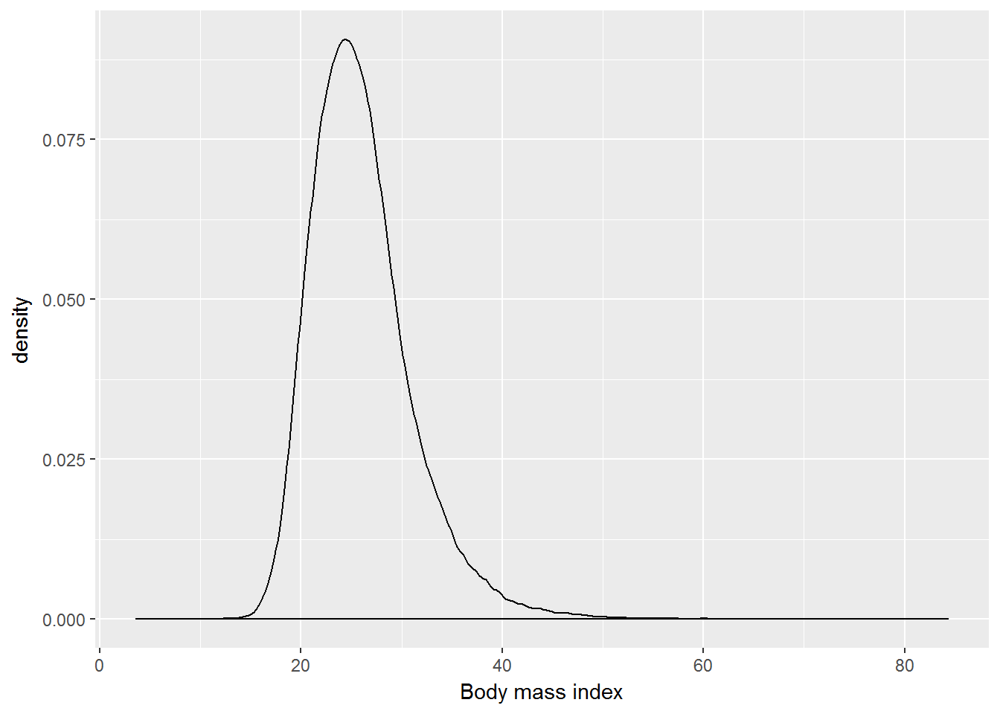
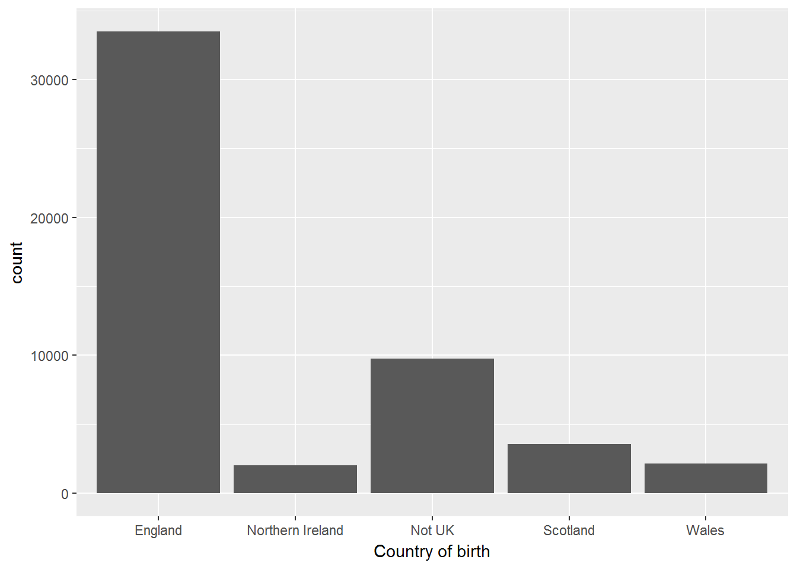

7 Data visualisation
Pre-requisite for this class: ch.3 (“Data visualisation”) from R for Data Science - http://r4ds.had.co.nz/data-visualisation.html
At home you learned about the basic principles of data visualisation in R with the ggplot2 package. Let us see how we can apply this to the Understanding Society data set.
Personally I can never remember all the details of the ggplot2 syntax. I often use the ready-made “recipes” from the R Graphics Cookbook by W.Chang – https://www.amazon.co.uk/R-Graphics-Cookbook-Winston-Chang/dp/1449316956/. The 2nd edition is coming out later this year – https://www.amazon.co.uk/Graphics-Cookbook-2e-Winston-Chang/dp/1491978600 .
You may also find Winston Chang’s website useful (and not only for graphics) - http://www.cookbook-r.com .
7.1 Reading in the data
First let us read in the data we used in week 2 when we learned about dplyr (a short version of the wave 1 data) and recreate the measures for weight, height and BMI.
library(tidyverse)
library(data.table)
W1 <- readRDS("myData/W1mod.rds")
head(W1, 3)## # A tibble: 3 x 15
## pidp a_sex a_dvage a_ukborn a_hlht a_hlhtf a_hlhti a_hlhtc a_hlwt
## <int> <int> <int> <int> <int> <int> <int> <int> <int>
## 1 68001367 1 39 1 1 6 0 -8 1
## 2 68004087 1 59 5 1 5 11 -8 2
## 3 68006127 2 39 1 1 5 1 -8 1
## # ... with 6 more variables: a_hlwts <int>, a_hlwtp <int>, a_hlwtk <int>,
## # heightcm <dbl>, weightkg <dbl>, bmi <dbl>7.2 Visualising one quantitative variable
Exercise. Visualise the distribution of the BMI with ggplot2. Which statistical graphs would be appropriate for this?
7.2.1 Histogram.
ggplot(W1, aes(x=bmi)) +
geom_histogram(bins = 100) +
xlab("Body mass index")7.2.2 Density chart.
ggplot(W1, aes(x=bmi)) +
geom_density() +
xlab("Body mass index")
7.3 Visualising one categorical variable
Exercise. Visualise the distribution of a_ukborn with ggplot2. Which statistical graphs would be appropriate for this?
7.3.1 Bar plot.
table(W1$a_ukborn)##
## -9 -2 -1 1 2 3 4 5
## 6 2 8 33480 3567 2154 2033 9744W1 <- W1 %>%
mutate(a_ukborn = ifelse(a_ukborn > 0, a_ukborn, NA)) %>%
mutate(cbirth = recode(a_ukborn, "1" = "England",
"2" = "Scotland",
"3" = "Wales",
"4" = "Northern Ireland",
"5" = "Not UK"))
table(W1$cbirth)##
## England Northern Ireland Not UK Scotland
## 33480 2033 9744 3567
## Wales
## 2154W1 %>%
filter(!is.na(cbirth)) %>%
ggplot(aes(x=cbirth)) +
geom_bar() +
xlab("Country of birth")
table(W1$cbirth, useNA = "always")##
## England Northern Ireland Not UK Scotland
## 33480 2033 9744 3567
## Wales <NA>
## 2154 167.4 Visualising two quantitative variables
Exercise. Visualise the joint distribution of weight (in kg) and height (in cm). In your chart show the regression line and the nonparametric smoothing line.
ggplot(W1, aes(x = weightkg, y= heightcm)) +
geom_point() +
geom_smooth() +
stat_smooth(method=lm)7.5 Visualising one categorical and one quantitative variable
Exercise. Visualise the distribution of BMI for a) men and women, b) different age groups.
# Coding a categorical variable for age groups
table(W1$a_dvage, useNA = "always")##
## 16 17 18 19 20 21 22 23 24 25 26 27 28 29 30
## 937 864 787 798 786 738 756 786 806 791 827 849 878 936 914
## 31 32 33 34 35 36 37 38 39 40 41 42 43 44 45
## 884 879 917 864 928 983 923 976 1051 1054 1032 1043 935 968 987
## 46 47 48 49 50 51 52 53 54 55 56 57 58 59 60
## 940 941 917 889 873 824 817 765 803 722 761 703 756 666 662
## 61 62 63 64 65 66 67 68 69 70 71 72 73 74 75
## 820 806 775 685 621 646 591 521 563 571 500 498 443 411 380
## 76 77 78 79 80 81 82 83 84 85 86 87 88 89 90
## 368 356 338 294 287 267 225 207 166 147 132 108 80 73 54
## 91 92 93 94 95 96 97 98 99 100 101 <NA>
## 38 27 20 21 14 14 4 3 2 1 1 0W1 <- W1 %>%
mutate(agegr = ifelse(a_dvage < 31, "16-30",
ifelse(a_dvage > 30 & a_dvage < 46, "31-45",
ifelse(a_dvage > 45 & a_dvage < 61, "46-60",
">60")))) %>%
mutate(agegr = factor(agegr, c("16-30", "31-45", "46-60", ">60")))
ggplot(W1, aes(x = agegr, y= bmi)) +
geom_boxplot() +
xlab("Age group") +
ylab("Body mass index")
7.6 Visualising two categorical variables
Exercise. Use facets to visualise the distribution of a_ukborn by age group.
W1 %>%
filter(!is.na(cbirth)) %>%
ggplot(aes(x=cbirth)) +
geom_bar() +
xlab("Country of birth") +
facet_wrap(~ agegr)
Alternatively you can do a jitter plot, but in our case it wouldn’t look nice.
W1 %>%
filter(!is.na(cbirth)) %>%
ggplot(aes(x=cbirth, y = agegr)) +
geom_jitter() +
xlab("Country of birth") +
ylab("Age group")
7.7 Showing the relationships by group
Exercise. Use facets to visualise the association between age and BMI by country of birth.
W1 %>%
filter(!is.na(cbirth)) %>%
ggplot(aes(x = a_dvage, y= bmi)) +
geom_point() +
geom_smooth() +
facet_wrap(~ cbirth)